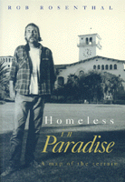

Steps toward understanding "street people" in Santa Barbara—and everywhere
Steps toward understanding "street people" in Santa Barbara—and everywhere


 Steps toward understanding "street people" in Santa Barbara—and everywhere
Steps toward understanding "street people" in Santa Barbara—and everywhere

|  |
Homeless in ParadiseA Map of the TerrainRob Rosenthalpaper EAN: 978-1-56639-130-6 (ISBN: 1-56639-130-X) |
Co-winner of the Association for Humanist Sociology Book Award, 1995
"Homeless in Paradise combines participant-observation data, interviews, and analysis of structural data to produce one of the best books I have read on homelessness."
—Elliot Liebow
Paradise is Santa Barbara, California, where in the early 1980s the beautiful, affluent city faced the problem of what to do with all the "street people." Rob Rosenthal worked with the Homeless People's Project in Santa Barbara and has documented his experiences with forty-four oral histories and numerous interviews.
His portraits challenge the traditional view of the homeless as "slackers," hopeless victims, and loners. Instead, he portrays active agents attempting to preserve networks and obtain resources essential for managing and escaping homelessness. Emphasizing that one cannot understand individual homelessness without understanding its social roots, Rosenthal traces how people lose their homes, how they acquire the street knowledge to survive, and how they develop affiliations with each other and with housed people and mainstream institutions.
People do not willingly choose homelessness, he argues. Homeless in Paradise carries with it a stinging indictment of irrational federal policies that intensify the problems of poverty, unemployment, and lack of human services. Rosenthal proposes a number of ways to deal with homelessness on federal, state, and local levels, contending that if we can understand how the nightmare of homelessness can exist in Paradise, we might have a better idea of what might be done about it elsewhere.
"Rosenthal has put a human face on the problem of homelessness. He gives us the opportunity to get to know homeless people as individuals not just stick figures or stereotypes. Homeless in Paradise traces the political, social, and economic forces that produce this destitution and suffering. Yet, as importantly, it directs us toward humane public policies at all levels of government."
—Peter Dreier
"In Homeless in Paradise, Rob Rosenthal gives us a powerful and disturbing picture of how society's structural conditions are played out in the lives of homeless individuals. This fascinating and provocative book is carefully researched and theoretically grounded, and it is unique in its rich portrayal of homelessness from the perspective of homeless persons themselves. This book is essential reading for anyone who studies homeless or any other 'problem populations.'"
—Marjorie Robertson, Ph.D., Alcohol Research Group, California Pacific
Acknowledgments
Introduction: Why Are They Homeless?
1. Paradise
2. Becoming Homeless
3. Being Homeless
4. Hanging on and Hanging out
5. The Homeless Movement
6. Getting Ahead and the Barriers to Escape
7. Homelessness and the American Paradise
Appendix: Researching Homelessness: A Case History
Notes
Index
Rob Rosenthal is Associate Professor of Sociology at Wesleyan University. For five years he conducted the Homeless People's Project in Santa Barbara, California.
© 2015 Temple University. All Rights Reserved. This page: http://www.temple.edu/tempress/titles/631_reg.html.